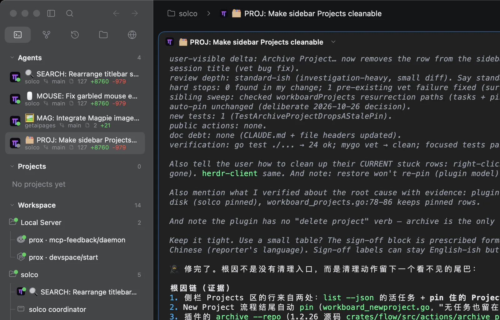
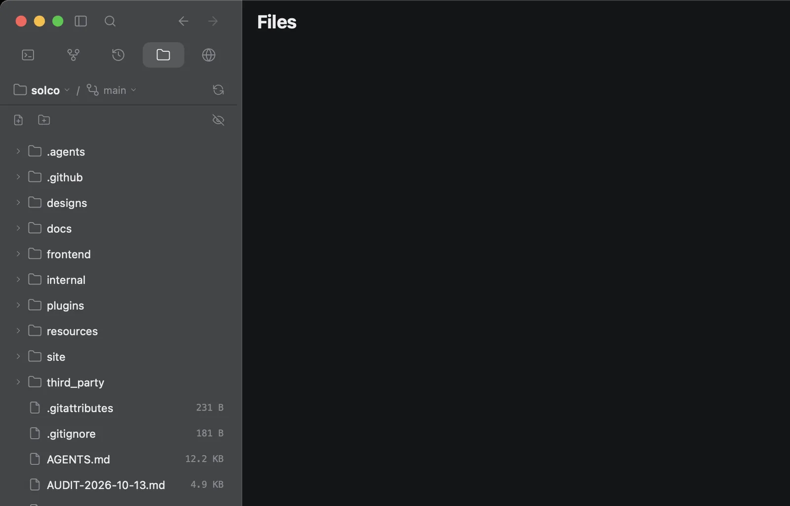

Agents and sessions
Run multiple agents in organized sessions. Keep context, history, and results in one place.

Native macOS workspace for AI coding agents
Solco is a native macOS workspace for AI coding agents, bringing agents, code, terminal, and your machine together in one calm, focused space.

Features
Run multiple agents in organized sessions. Keep context, history, and results in one place.

Work beside native terminal sessions, project files, and remote hosts without leaving the task.


Review changes, commit with confidence, and move work between machines.


Architecture
Solco owns the native experience. Herdr owns sessions, processes, and runtime state.
Get started
macOS 13+ · Apple Silicon · Free and open source